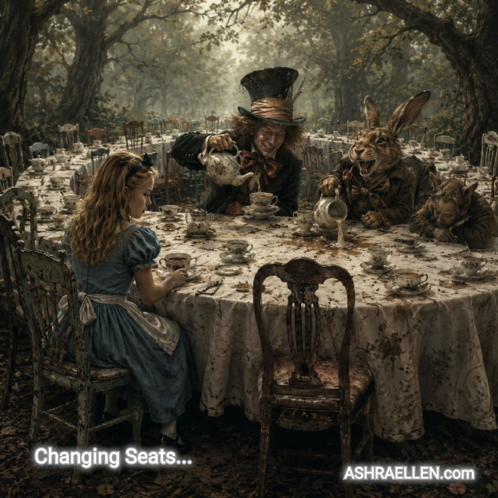

Tukiajatus 0010
Likainen kuppi

Ympyrää juokseminen ei pese kuppia. Se vaihtaa vain juoksijan.
Merkitys
Satuasetelma näyttää tavallisen inhimillisen tempun: liike sekoitetaan ratkaisuun. Paikka, rooli ja selitys vaihtuvat, mutta omaa kuppia ei vieläkään pestä.
Koko teksti
Liisa istui pöydän reunalla ja katseli, kuinka Hullu Hatuntekijä täytti jälleen teekupin — vaikka kukaan ei ollut vielä juonut edellistä loppuun.
— Miksi te siirrytte joka kerta toiselle paikalle? — hän kysyi. — Teehän on kuitenkin samaa.
— Likainen kuppi, — Hatuntekijä selitti arvokkaasti.
— Mutta tehän vain pakenette omaa kuppianne ympäri pöytää.
— Aivan, — sanoi Hatuntekijä. — Sitä juuri kutsutaan elämäksi.
Maaliskuunjänis nauroi niin kovasti, että kaatoi maitokannun.
Unikeko ei herännyt.
Liisa mietti hetken.
— Mutta jos siirrytte tarpeeksi kauan, palaatte lopulta oman kuppinne ääreen. Ja se on edelleen likainen.
— Tietysti, — sanoi Hatuntekijä. — Mutta siihen mennessä me olemme jo toisenlaisia.
Liisa avasi suunsa.
Sulki sen.
Avasi uudelleen.
— Sehän ei ratkaise kupin ongelmaa.
— Ei, — Hatuntekijä myönsi vallan iloisesti. — Mutta se ratkaisee meidän ongelmamme.
Maaliskuunjänis nosti sormensa kuin aikoisi lisätä jotakin tärkeää, mutta muutti mielensä ja söi sormensa.
Siis keksin.
Vaikka Liisa ei ollut aivan varma.
— Mutta sehän on... — hän aloitti.
— Loogista, — Hatuntekijä keskeytti. — Täysin loogista. Juuri siksi se ei toimi.
Liisa katsoi omaa kuppiaan.
Sitten viereistä.
— Entä jos minä siirryn, — hän kysyi varovasti, — muutunko minäkin toiseksi?
Hatuntekijä hymyili.
— Et heti. Ensin vain lakkaat olemasta se, joka jäi paikalleen.
Liisa vaikeni pitkäksi aikaa.
— Se on väärin, — hän sanoi viimein.
— Tietenkin, — Hatuntekijä nyökkäsi. — Mutta hämmästyttävän kätevää.
Maaliskuunjänis kaatoi maitoa sokeriastiaan ja teeskenteli, että juuri niin oli tarkoituskin.
Unikeko mumisi jotakin unissaan.
Liisa katsoi vielä kerran omaa kuppiaan.
Tee oli kylmää.
Viereinen tuoli oli tyhjä.
Liisa siirtyi toiselle paikalle...
Miksi tämä valittiin
Tässä absurdius tekee välttelystä näkyvän. Ihminen voi vaihtaa sijaintia monta kertaa kohtaamatta koskaan sitä, mikä todella tarvitsee huomiota.
Tutkimushuomio
Kohtaus on vapaa kirjailijan tulkinta tunnetun Liisa Ihmemaassa -sadun teekutsuaiheesta. Alkuperäistä kohtausta on muutettu ja täydennetty keskeisen ajatuksen havainnollistamiseksi: ihminen voi kiertää kehää, vaihtaa paikkaa ja selitystä kohtaamatta silti omaa ”likaista kuppiaan”.
Kohtaus toimii pienenä apokryfina sisäisestä pakenemisesta. Absurdius ei ole pelkkä koriste vaan menetelmä: teekutsujen mielettömyys tekee näkyväksi tavallisen inhimillisen mekanismin — siirrytään muualle, jotta ongelmaa ei tarvitsisi ratkaista, ja kutsutaan sitä elämäksi.
 — mark of presence
— mark of presence